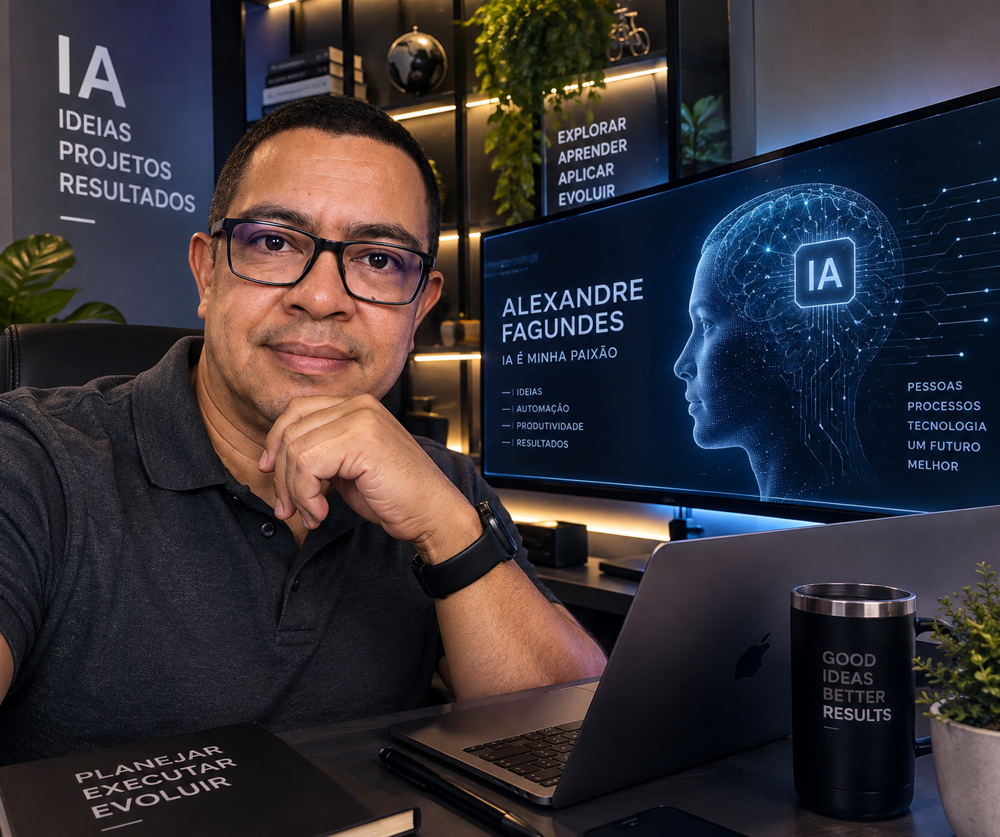

01
IA Generativa
Texto, imagem, vídeo e novas formas de criar e comunicar ideias.
IA é minha paixão.
Explorando inteligência artificial, tecnologia e automação para transformar ideias em soluções reais.

Sou um entusiasta de Inteligência Artificial fascinado pelas possibilidades que essa tecnologia está criando. Estudo, experimento e procuro entender não apenas como usar IA, mas como transformá-la em algo realmente útil.
Meu interesse está na interseção entre pessoas, processos e tecnologia — aprendendo continuamente e buscando aplicações práticas que simplifiquem tarefas, ampliem a criatividade e gerem resultados.
Texto, imagem, vídeo e novas formas de criar e comunicar ideias.
Como IA e software podem eliminar tarefas repetitivas e melhorar processos.
Sistemas capazes de pesquisar, raciocinar e executar fluxos de trabalho.
Experimentação prática para descobrir onde a tecnologia realmente faz diferença.
“Não quero apenas acompanhar a transformação provocada pela IA. Quero entendê-la, experimentá-la e fazer parte dela.”